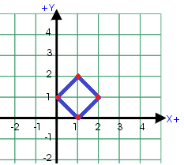

Cho 4 điểm tọa độ nguyên trên mặt tọa độ Decartes. Hỏi 4 điểm đó có tạo thành một hình vuông hay không?

Dữ liệu nhập: Gồm 4 dòng
- Dòng thứ i gồm hai số nguyên xi và yi là hoành độ và tung độ của điểm thứ i, hai số cách nhau một khoảng trắng (-100 ≤ xi, yi ≤ 100). Dữ liệu cho đảm bảo không có hai điểm nào trùng nhau.
Dữ liệu xuất:
- Nếu 4 điểm trên tạo thành một hình vuông, in ra "YES", nếu không phải in ra "NO".
Hình vuông là hình thoi có hai đường chéo bằng nhau.